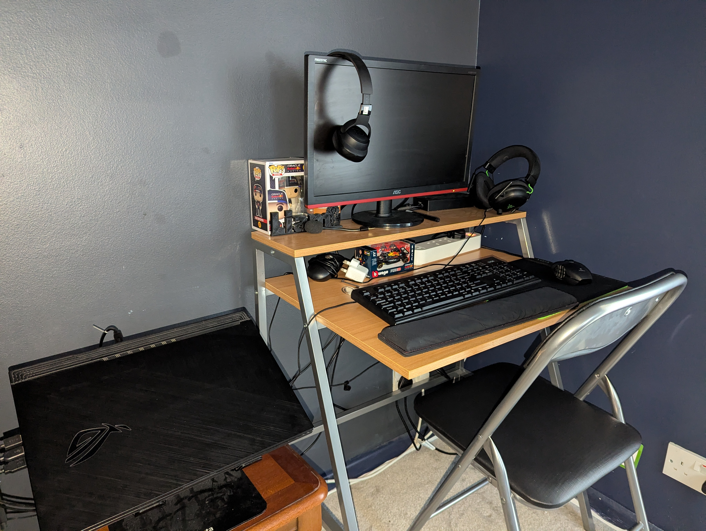

Loading...
Here you will find my diary/posts that showcase my latest projects such as homelab testing, coding projects like this HTML static website, and much more!
Take me homeIn this entry I will explain the route I took to setup my homelab, experiments I have completed and future projects I plan to explore.
Creating a homelab is a fun and practical way to experiment with new concepts, software, networking and virtual machines. The possibilities are endless. I started with the basics, focusing on virtualization and virtual machine software, and built my knowledge from there.
Setting up a homelab doesn’t have to be expensive and you can repurpose hardware you already own. Many people use their main PC, an old desktop, or a laptop they no longer need after upgrading. Fortunately, I had an older gaming laptop that was perfect for the job. The key requirement was virtualization support, which most modern machines have, allowing me to run virtual machine software and get started. What it looks like? My laptop sits behind me in my home office, connected to an external monitor. It currently runs Windows 11 and is paired with a full-size keyboard and mouse, making it much easier to use than relying on the laptop’s trackpad. This setup also gives it more of a desktop-like feel. Apart from my desk, keyboard, and mouse, I didn’t need to spend any extra money as I already had everything I needed. I’ll add an image of my setup below.
